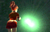

私達が「夢」と呼ぶ不思議な世界…。それがナイトディメンションです。
そこは三次元空間と隣接する異次元空間であり、私達は眠りにつくと（正確にはREM睡眠時に）、「意識」だけがそこへ旅立ちます。
 このナイトディメンションの世界観については、何もない真っ白な世界、すべてが光り輝く美しい世界、また暗くて恐ろしい世界など、さまざまな説がありますが、ドイツの精神病理学者：フレドリッチ・ホルツ氏の「Traum」によれば、ナイトディメンションには決まった形など存在しないと紹介されています。 なぜなら、その空間に迷い込んできた私達の「意識」によって常に姿を変えるから、というのがその理由です。
この「意識」こそが「NiGHTS」に登場する5つのイデアであり、イデアによってナイトディメンションに創り出された美しい世界が、ナイトピアです。
そしてさらに、そのナイトピアと対極に位置する暗く恐ろしい世界がナイトメア。
私達はこの2つの世界をそれぞれ「夢」、「悪夢」と呼んでいます。
NightsHome
 戻る
戻る
(C)SEGA 1996
このページは、ソニックチームが制作しています。
1996/3/27